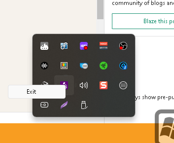

💡 How to Use Carnac in Online Training 🚀
As online training becomes more prevalent, it's essential to provide clear and concise guidance to students. Carnac is a powerful tool that can elevate your online teaching by showing keystrokes in real-time, helping your audience follow along with your demonstrations more easily. In this blog post, we'll walk through how to set up and use Carnac for your online training sessions.
🔧 What is Carnac?
Carnac is an open-source utility for Windows that displays your keystrokes and mouse clicks in real-time on your screen. This makes it easier for viewers to understand the shortcuts or commands you're using during a demonstration, especially when screen sharing or recording tutorials.
🚀 Why Use Carnac in Online Training?
-
Improves Clarity: Your audience can follow along with the shortcuts or commands you use without needing constant verbal explanations.
-
Boosts Engagement: Displaying keystrokes in real-time helps keep your audience engaged and focused on what you're doing.
-
Saves Time: Avoid repeatedly explaining the same keyboard shortcuts or commands.
🛠️ Setting Up Carnac for Your Online Training
-
Download Carnac:
You can download Carnac from its GitHub page. Make sure to get the latest version for a smooth experience. -
Install and Launch:
Once you've downloaded it, install Carnac and launch the program. You'll see the keystrokes automatically start appearing on your screen when you type. -
Adjust Settings:
-
Text Size and Position: You can adjust where the keystrokes appear on your screen and how big they are. You might want to keep them in the lower corner to avoid obstructing your main content.
-
Show/Hide Modifiers: Customize whether you want Carnac to display function keys or modifier keys (like
Ctrl,Alt,Shift). -
Pause and Resume:
🚀 If you're taking a break or explaining without typing, you can easily pause Carnac. Use the tray icon to start or stop recording keystrokes. -
Using Carnac in Your Recording:
Whether you're hosting a live session or recording for later, Carnac works in the background, displaying your keystrokes with minimal distraction. You don’t need to worry about toggling it on and off once it’s set up.
📝

Pause
If you're recording tutorials, a simple tip is to use Carnac alongside screenshot pauses. This lets you break down complex sequences of commands step-by-step while keeping the flow of your explanation uninterrupted. 🚀
💡 How Carnac Enhances Online Training:
-
For Coding Lessons: If you’re teaching programming or command-line interfaces, Carnac helps your viewers see every command you type in real-time.
-
For Software Demos: It’s ideal for showing off shortcuts and workflow tips in apps like Photoshop, Visual Studio, or any other tool-heavy software.
-
For Virtual Workshops: Keep your virtual audience on track by making sure they know which buttons you’re pressing.
📷 Screenshot Example:
Here’s a sneak peek at how Carnac looks in action! (Imagine showing a screenshot of your keystrokes being displayed on screen during a coding session).
🔗 Connect with Me:
-
💼 LinkedIn: https://www.linkedin.com/in/rifaterdemsahin/
-
🐦 Twitter: https://x.com/rifaterdemsahin
-
🎥 YouTube: https://www.youtube.com/@RifatErdemSahin
-
💻 GitHub: https://github.com/rifaterdemsahin
Ready to supercharge your online training with Carnac? Let me know how you use it in your sessions! 🚀
Imported from rifaterdemsahin.com · 2024